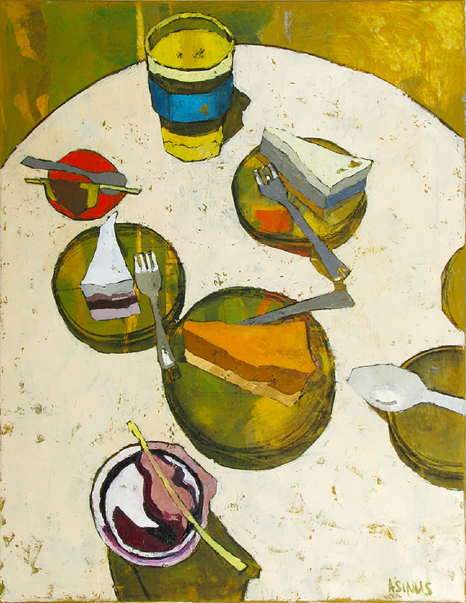

Varškės pyragai - skaniausi varškės pyragų receptai ... Pyragai greitukai - 38 skanėstai, kuriuos pašausite į orkaitę per keliolika minučių AUTORIUS: LaMaistas.lt, 2020-03-17 @ Shutterstock Tikriausiai daugelis mėgsta skanutėlius pyragus, tortus, sausainius ir pyragaičius, o dar geriau, kai jiems paruošti nereikia daug laiko! Atrinkome net 38 nuostabius skanėstus, kurių paruošimui ...
Rekordiškai greita ir labai skanu: kondensuoto pieno pyragas Pyragai 1.Pyragas „Avietėlė“- 2.Pyragas „Morenginis pyragas“- 3.Pyragas „Mozūriškas pyragas“- šakočio skonio pyragas. Fasuojama į maistinę termo plėvelę.(sveriamas). Sudėtyje:- kvietiniai miltai, sviestas, kiaušiniai, cukrus, vanduo, vanilinas. Fasuojama į maistinę termo plėvelę. 4.Pyragas „Draugystė“- trapios tešlos plokštainis su varškės įdaru.
Pyragai, pyragų receptai - Receptai | Patiekalai Naujausi forumo pranešimai. Forumas. parašyta forume Skonių Blogas nuo Nida on 2017/10/29 19:41 Nuotraukų ir receptų peržiūra. parašyta forume Skonių Blogas nuo Gedukass on 2017/04/17 20:50
Pyragai | La Maistas Rekordiškai greitai padaromas pyragas. Mane tiesiog užvaldė smalsumas, koks čia pyragas iš tokių produktų gali gautis! Žinokit, sunku ir aprašyti. Jis skanus. Net labai. Ypač prie puodelio latte kavos ar arbatos. Du rytus iš eilės pusryčius pradėdavau nuo gabalėlio šio pyrago!
Pyragai, tortai, sausainiai, bandelės. Miltiniai ... Pyragai. Pyragas su rududu. Lengvas ir paprastas receptas. Redaktore M.-5 gruodžio, 2019. 0. Pyragas su rududu jums patiks vien todėl, kad jo nereikia kepti! Na, o jei jums patinka pyragai apskritai, šis taps jūsų mėgstamiausiu. Ingredientai: 250 gramų sausainių...
Pyragai, pyrag receptai Pyragai (receptų: 1957) Snikerinis tinginys Varškės pyragas su kondensuotu pienu ir obuoliais - angeliškai skanus Drėgnas cukinijų pyragas su obuoliais Drėgnas šokoladinis pyragas su apelsinais Varškinis obuolių pyragas - tirpstantis burnoje Trapus pyragas su obuoliais ir morengo kepure ...
Pyragai Archives - NAMO Pyragai. Kakavinis varškės tortas su karamelizuotomis kriaušėmis. Greitai paruošiamas meduolių ir bananų tortas 1. Rudens pyragas su sūriu 1. Labai paprastas ir skanus obuolių pyragas 4. Špinatų tortas su varškės kremu ir braškėmis 2. Chocoflan – kakavinis pyragas su pudingu 1.
Šokoladiniai pyragai - Receptai | Patiekalai Pyragai - Kiekvienas ras tobuliausią desertą sau! Pyragai, bandelės, keksiukai, ledai, pyragaičiai, pudingai, putėsiai, saldainiai, sausainiai, tortai, želė, vaisių ir uogų desertai. ...
Pyragai, kepiniai - Beatos virtuvė Pyragai, pyrag receptai. Čia rasi atrinktus receptus, priskirtus kategorijai pyragai. Surask ir išsirink savo nuomone geriausius receptus ir palik savo įvertinimą prie receptų! Galbūt tavo įvertinimas padės kitiems surasti gerus receptus, kurių jie dar nežino.
Pyragai | La Maistas
2020.10.29 13:34

TV IDĖJOS RECEPTAI KONKURSAI RECEPTAI PAGAL TIPĄ Helovinas Valgome sveikiau! Grilio patiekalai Apkepai Blynai, sklindžiai Desertai Gėrimai Gėrimai su alkoholiu Karšti patiekalai Uogienės Konservuoti patiekalai Košės, tyrės Kremai ir padažai Picos Pyragai, kepiniai Salotos, mišrainės Sriubos Sumuštiniai Troškiniai Užkandžiai Vaikams Vegetariški Be glitimo Traškūs žiedinio kopūsto kepsneliai Tobulas moliūginis sūrio tortas Atsiųsk savo receptą Patiekalo tipas Helovinas Valgome sveikiau! Grilio patiekalai Apkepai Blynai, sklindžiai Desertai Gėrimai Gėrimai su alkoholiu Karšti patiekalai Uogienės Konservuoti patiekalai Košės, tyrės Kremai ir padažai Picos Pyragai, kepiniai Salotos, mišrainės Sriubos Sumuštiniai Troškiniai Užkandžiai Vaikams Vegetariški Be glitimo Pagr. ingredientas Aviena Bulvės Daržovės Grybai Jautiena Kiauliena Kiaušiniai ir pieno produktai Miltai ir kruopos Soja Veršiena Vaisiai ir uogos Žvėriena Paukštiena Makaronai Šokoladas Žuvis ir jūros gėrybės Riešutai Proga Mamos dienos skanėstai Gardumynai Tėvo dienai Velykiniai patiekalai Valentino dienai Kalėdų patiekalai Kūčių patiekalai Gimtadienio patiekalai Joninių skanėstai Helovinas Vestuviniai patiekalai Pasaulio virtuvė Airijos virtuvė Amerikos virtuvė Anglijos virtuvė Argentinos virtuvė Armėnijos virtuvė Austrijos virtuvė Baltarusijos virtuvė Brazilijos virtuvė Bulgariška virtuvė Danijos virtuvė Graikijos virtuvė Gruzijos virtuvė Indijos virtuvė Ispanijos virtuvė Italijos virtuvė Japonijos virtuvė Kinijos virtuvė Korėjiečių virtuvė Lenkijos virtuvė Lietuvos virtuvė Maroko virtuvė Meksikos virtuvė Norvegiška virtuvė Olandijos virtuvė Prancūzijos virtuvė Rusijos virtuvė Švedijos virtuvė Šveicarijos virtuvė Slovakijos virtuvė Suomių virtuvė Tailando virtuvė Tibeto virtuvė Totorių virtuvė Turkijos virtuvė Ukrainos virtuvė Vengrijos virtuvė Vokietijos virtuvė Latvijos virtuvė Čekų virtuvė Pyragai (receptų: 1959) Minkštas obuolių pyragas Varškės pyragas su kondensuotu pienu ir obuoliais - angeliškai skanus Drėgnas cukinijų pyragas su obuoliais Drėgnas šokoladinis pyragas su apelsinais Varškinis obuolių pyragas - tirpstantis burnoje Trapus pyragas su obuoliais ir morengo kepure Šokoladinis moliūgų pyragas su varškės kremu Skaniausias obuolių pyragas Greitas obuolių trupiniuotis - labai obuolinis ir labai skanus! Tobulas kokosinis obuolių pyragas Grietininis obuolių pyragas - minkštutis ir tirpstantis burnoje Olandiškas obuolių pyragas Greitas moliūgų pyragas Tobulas obuolių pyragas - fantastiškai skanus Drėgnas obuolių pyragas su razinomis ir riešutais Tobulas baskų sūrio pyragas Citrininis keksas su kriaušėmis Greitas trupininis obuolių pyragas Obuolių pyragas su kondensuotu pienu - greitas ir be galo skanus Kvapnus keksas su obuoliais Trapus pyragas su bulvėmis ir voveraitėmis (be kiaušinių) Nematomas obuolių ir kriaušių pyragas Sviestinis obuolių pyragas - mano pats pačiausias! Pyragas su lašiša Apverstas slyvų pyragas Grietininis slyvų pyragas - skanus ir greitas Greitas slyvų pyragas ala Clafoutis Grikių miltų galetė su voveraitėmis Biskvitinis močiutės obuolių pyragas - pats lengviausias receptas Šokoladinis cukinijų pyragas Varškės tinginys su jogurtu ir vyšniomis (be kondensuoto pieno) Paprastas keksas su serbentais Sviestinis vyšnių pyragas Tobulas raudonujų serbentų pyragas su morengu Sūrio pyragas su uogų padažu Greitas grietininis plokštainis Sviestiniai keksiukai su uogomis Nekeptas sausainių tortas su braškėmis ir maskarpone Gaivus pyragas su varške ir uogomis Varškinis tinginys su maskarpone ir braškėmis Rabarbarų pyragas Kuršėnų vyniotinis su braškėmis Varškės tinginys su braškėmis Rabarbarų pyragas su braškėmis - skanutėlis greitutėlis Rodyti daugiau receptų Kraunama...